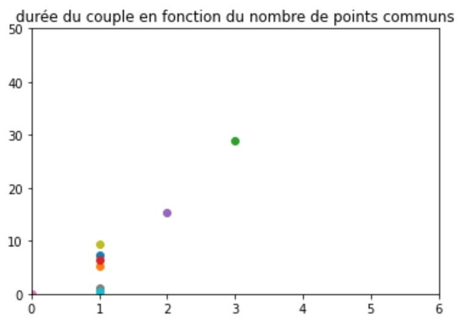

Projet ARE Homogamy Network
Notre sujet porte sur l’étude des relations amoureuses Homme/Femme,
le but sera de modéliser l’évolution du nombre de couples et leur durée
en mettant en relation différents agents aléatoires. Pour cela, il nous
faut donc connaître les personnalités types qui s’assemblent, et les raisons
qui poussent un couple à durer ou pas. En effet même si on peut à juste
titre croire au coup de foudre et à l’amour éternel les études ont prouvé
que régulièrement on retrouvait les mêmes caractéristiques d’un couple à l’autre.
Cela pourrait permettre de progresser dans la compréhension
des relations humaines à une échelle plus large mais aussi pour certaines firmes
de ciblée encore plus précisément leurs clients et leur publicité .
Première idée des paramètres à prendre en compte dans le code :
- Age
- genre
- caracteres : valeur entre 0 et 1 // ou valeur discrète
- etat d'esprit // envie du moment
- nombre de relations passées
- durée des relations passées
- probabilité de rencontre ( réseau social, small world)
- homophilie et homogamie
Paramètres finalement pris en compte pour symboliser les agents :
- Age
- Statut social: 'travaille, etudiant ou chomage'
- caracteres : valeur discrète de 1 à 4 selon le test de personnalité MBTI
- etat d'esprit // envie du moment
- nombre de relations passées
- durée moyenne des relations passées
Semaine du 28 mars:
Cette semaine nous nous sommes séparé les tâches pour avancer à la fois sur le code, conçu
sans valeurs précises. Marko a donc commencé à coder une première version de notre modèle avec seulement
"le corps" des fonctions sans rentrer de valeurs liées aux données. Ce programme est donc censé fonctionner pour n'importes
quelles valeurs ou modèle simulant la même chose que nous. Pendant ce temps je me suis occupé des fonctions
qui tire au hasard les paramètres pour chaque individu. Dans le corps du programme pour symboliser la partie aléatoire de l'amour,
le fait de parfois s'attacher à des personnes qui n'ont rien à voir avec nous, on a choisit de représenter cela grâce à la fonction random.choice
avec un coefficient différent pour chaque paramètres.
Semaine du 04 avril:
Sur cette séance on s'est attaqué aux graphiques qui nous permettent de visualiser les résultats de notre projet. Pour l'instant nous avons réussi à
sortir des graphiques sous la forme de nuage de points.
Le code fonctionne bien et nous affiche une courbe représentant l'espérance de vie d'un couple (pour l'instant unité arbitraire) en fonction du nombre
de paramètres en communs. Cependant il serait intéressant d'avoir la droite de régression linéaire permettant de visualiser la moyenne pour chaque
nombre de points en communs. Malgré l'abscence de ce tracé qui devrait etre de la forme "plt.plot", lorsqu'on augmente le nombre
de meeting effectués on constate que les points avec plusieurs points communs se placent de manière générale de plus en plus haut.

On voit sur notre premier graphique en forme de nuage de point que plus le couple tiré a de points communs
plus il va durer longtemps.
Semaine du 11 avril:
Le but de cette semaine est de finir le plus gros du travail et surtout de finaliser le code et ses rendus, pour avoir le temps de mettre en forme
la page html avant lundi 18 avril. Même si la courbe en fonction des points communs tient la route et nous donne un graphique cohérent je souhaite
que l'estimation donnée par notre programme se base sur un écart entre les caractéristiques des deux agents plutôt que sur juste un nombre
de point communs qui peuvent parfois ne pas être les plus influent sur la bonne entente dans un couple.
La deuxième image est le premier graphique qui prend en compte l'écart d'age, personnalité, envies... mais on se rend
compte qu'il y a une erreur car plus il y a de différences plus le couple peut durer longtemps. Cela ferait croire que les
opposés s'attire mais ce n'est pas ce qui ressortdes études que nous avons utilisées.